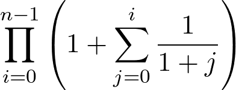

Liczba punktów za każde zadanie oprócz ostatniego podana jest na początku jego treści w nawiasach.
Uwaga: programy nie muszą sprawdzać poprawności danych jeżeli nie jest to jawnie powiedziane w treści konkretnego zadania.
(2 pkt.) W Stanach Zjednoczonych zużycie paliwa podaje się zazwyczaj w milach na galon (MPG — miles per gallon). Wartość MPG określa ile mil można przejechać na jednym galonie paliwa. Napisz program, który pobierze od użytkownika ilość paliwa w baku na początku podróży (w galonach), ilość paliwa na końcu podróży (również w galonach), przejechany dystans (w milach), a następnie wyświetli średnie spalanie paliwa podczas podróży (w MPG).
Przykładowe użycie programu:
Ilość paliwa na początku (w galonach): 10 Ilość paliwa na końcu (w galonach): 9 Przejechana droga (w milach): 30 Spalanie (MPG): 30
Ilość paliwa na początku (w galonach): 30.5 Ilość paliwa na końcu (w galonach): 29 Przejechana droga (w milach): 100 Spalanie (MPG): 66.6667
(3 pkt.)Napisz program, który pobierze od użytkownika ilość paliwa w baku na początku podróży (w galonach), ilość ilość paliwa na końcu podróży (również w galonach), przejechany dystans (w milach), a następnie wyświetli średnie spalanie paliwa podczas podróży (w litrach na 100 kilometrów — l/100 km).
Przyjmij, że jedna mila to 1,609344 km, a jeden galon to 3,78542 l.
Przykładowe użycie programu:
Ilość paliwa na początku (w galonach): 10 Ilość paliwa na końcu (w galonach): 9 Przejechana droga (w milach): 30 Spalanie (l/100 km): 7.84052
Ilość paliwa na początku (w galonach): 30.5 Ilość paliwa na końcu (w galonach): 29 Przejechana droga (w milach): 100 Spalanie (l/100 km): 3.52824
(3 pkt.) Pewna osoba założyła, że z każdej otrzymanej sumy pieniędzy końcówkę będzie zawsze odkładać do oszczędności. Otrzymana kwota składa się zawsze ze złotych i groszy. Odkładana kwota jest zawsze liczbą złożoną z dwóch ostatnich cyfr liczby złotych. Grosze nie są nigdy odkładane. Np. dla kwoty 1234 złotych i 56 groszy odłożone zostaną 34 złote.
Napisz program, który pobierze od użytkownika otrzymaną kwotę w groszach, a następnie wyświetli odłożoną kwotę w złotych.
Przykłady użycia programu:
Podaj otrzymaną kwotę w groszach: 123456 Odłożona kwota w złotych: 34
Podaj otrzymaną kwotę w groszach: 99 Odłożona kwota w złotych: 0
Podaj otrzymaną kwotę w groszach: 10357 Odłożona kwota w złotych: 3
Podaj otrzymaną kwotę w groszach: 123 Odłożona kwota w złotych: 1
(4 pkt.) Napisz program, który pobierze od użytkownika wartości dwóch liczb x i y a następnie wyświetli wartość wyrażenia .
Przykłady użycia progamu:
x = 4 y = 5 wynik = 0.047619
x = 35 y = 35 wynik = 0
x = -0.1 y = 0.2 wynik = 0.558901
(3 pkt.) Napisz program, który pobierze od użytkownika liczbę całkowitą nieujemną — liczbę pełnych godzin, jaka minęła od północy. Program ma wyświetlić informację o tym czy jest jeszcze przed południem, czy nie. Godziny przedpołudniowe to godziny od 0 do 11.
Przykład użycia:
Ile minęło godzin: 0 Jest przed południem.
Ile minęło godzin: 11 Jest przed południem.
Ile minęło godzin: 12 Jest po południu.
Ile minęło godzin: 23 Jest po południu.
Ile minęło godzin: 49 Jest przed południem.
Ile minęło godzin: 545 Jest po południu.
(5 pkt.) Napisz program, który pobierze od użytkownika szerokość geograficzną w stopniach i minutach (minuta to sześćdziesiąta część stopnia), a następnie wyświetli informację o tym, czy podana szerokość mieści się w zakresie szerokości geograficznych pomiędzy Krakowem a Warszawą. Załóż, że zakres nie obejmuje miast, których szerokość jest równa (z dokładnością do minuty) szerokości geograficznej Krakowa lub Warszawy. Szerokość geograficzna Krakowa to 50°03′ (50 stopni i 3 minuty), a Warszawy 52°14′.
Przykłady użycia programu
stopnie: 50 minuty: 3 Szerokość spoza zakresu.
stopnie: 51 minuty: 50 Szerokość mieści się w zakresie.
stopnie: 52 minuty: 14 Szerokość Spoza zakresu.
stopnie: 53 minuty: 2 Szerokość spoza zakresu.
(6 pkt.) Klasyfikacja medalowa polega na uszeregowaniu państw pod względem liczby zdobytych medali na pewnych zawodach sportowych (np. na igrzyskach olimpijskich). Porównanie polega na tym, że państwo, które zdobyło więcej złotych medali jest wyżej w klasyfikacji (niezależnie od liczby pozostałych). W przypadku równej liczby złotych medali pod uwagę brane są srebrne, a jeżeli ich liczba również jest równa, to pod uwagę brane są medale brązowe.
Napisz program, który pobierze od użytkownika liczbę medali każdego rodzaju zdobytych przez dwa państwa, a następnie wyświetli informację o tym, które państwo jest wyżej w klasyfikacji medalowej (lub o tym, że są w niej na tej samej pozycji). Program nie może zakładać żadnego ograniczenia na liczbę możliwych do zdobycia medali każdego rodzaju.
Przykłady działania programu:
Pierwsze państwo: złote medale: 10 srebrne medale: 13 brązowe medale: 87 Drugie państwo: złote medale: 11 srebrne medale: 3 brązowe medale: 2 Drugie państwo jest wyżej w klasyfikacji.
Pierwsze państwo: złote medale: 0 srebrne medale: 3 brązowe medale: 5 Drugie państwo: złote medale: 0 srebrne medale: 3 brązowe medale: 5 Państwa mają równą pozycję w klasyfikacji.
(6 pkt.) Napisz program, który pobierze od użytkownika pewną kwotę (liczba całkowita nieujemna w pełnych złotych) oraz cenę pewnego towaru (liczba całkowita dodatnia w pełnych złotych). Program wyświetla po kolei informację o tym ile pozostanie z podanej kwoty po zakupie jednej sztuki towaru, dwóch sztuk, itd. Program zakłada, że nie można przekroczyć podanej kwoty (pozostała po zakupie danej liczby sztuk kwota nie może być ujemna).
Przykłady użycia:
kwota (zł): 49 cena towaru (zł): 12 1 szt. - zostanie 37 zł. 2 szt. - zostanie 25 zł. 3 szt. - zostanie 13 zł. 4 szt. - zostanie 1 zł.
kwota (zł): 50 cena towaru (zł): 60
(7 pkt.) Napisz program, który pobiera od użytkownika kolejne liczby całkowite nieujemne, aż ich suma osiągnie wartość co najmniej 21. Następnie program wyświetla ich sumę oraz informację o tym ile spośród nich miało wartość mniejszą niż 5.
Przykład pracy z programem może wyglądać tak:
Podaj kolejną liczbę: 5 Podaj kolejną liczbę: 0 Podaj kolejną liczbę: 6 Podaj kolejną liczbę: 2 Podaj kolejną liczbę: 4 Podaj kolejną liczbę: 1 Podaj kolejną liczbę: 12 suma: 30 liczb mniejszych niż 5: 4
(7 pkt.) Napisz program pobierający od użytkownika wartość liczb a
(typu double) oraz n (całkowita dodatnia) i wyświetlający
wartość wyrażenia .
Przykład działania programu:
a = 2 n = 1 wynik = 5
a = 1.5 n = 10 wynik = 50.8294
(8 pkt.) Napisz program pobierający od użytkownika wartość liczby całkowitej dodatniej n i wyświetlający wartość wyrażenia .
Przykład działania programu:
n = 1 wynik = 2
n = 2 wynik = 5
n = 101 wynik = 99429.5
(5 pkt.) Napisz funkcję mającą parametr n typu int i parametr x typu double. Funkcja
zwraca część całkowitą (tzw. podłogę) z wartości .
(10 pkt.) Napisz program pobierający od użytkownika wyniki zawodów biegowych i limit czasu ich ukończenia oraz wyświetlający czas i numer najszybszego zawodnika oraz informację o tym ilu zawodników ukończyło zawody w podanym limicie.
Program najpierws pobiera limit czasowy w godzinach, minutach i sekundach. Potem pobiera od użytkownika liczbę zawodników. Następnie pobiera czasy kolejnych zawodników (program ma wyświetlać numer zawodnika, którego czas pobiera; zawodnicy ponumerowani są od 1). Czas pobierany jest w godzinach, minutach i sekundach. Po zakończeniu pobierania danych program wyświetla numer i czas najszybszego zawodnika, oraz liczbę zawodników, którzy zmieścili się w limicie czasowym. Czas zawodnika wyświetlany jest w w godzinach, minutach i sekundach. Załóż, że zawodnik, którego czas jest dokładnie taki jak limit zmieścił się w czasie.
Podczas pobierania danych program wymusza na użytkowniku podawanie poprawnych danych (liczba zawodników musi być dodatnia, liczba godzin musi być nieujemna, liczba minut i sekund musi być z zakresu 0—59).
Przykładowa sesja z programem może wyglądać tak:
Podaj limit czasowy. godziny: 3 minuty: 45 sekundy: 0 Podaj liczbę zawodników: 0 Liczba zawodnikow musi być dodatnia. Podaj liczbę zawodników: -3 Liczba zawodnikow musi być dodatnia. Podaj liczbę zawodników: 5 Podaj czas 1. zawodnika. godziny: -3 Podaj liczbę nieujemną: -4 Podaj liczbę nieujemną: 3 minuty: 60 Podaj liczbę z zakresu 0-59: 0 sekundy: -4 Podaj liczbę z zakresu 0-59: 70 Podaj liczbę z zakresu 0-59: 59 Podaj czas 2. zawodnika. godziny: 3 minuty: 45 sekundy: 0 Podaj czas 3. zawodnika. godziny: 2 minuty: 30 sekundy: 50 Podaj czas 4. zawodnika. godziny: 10 minuty: 10 sekundy: 10 Podaj czas 5. zawodnika. godziny: 4 minuty: 5 sekundy: 6 Najszybszy zawodnik: 3 Czas: 2 g. 30 m. 50 s. Liczba zawodników, którzy zmieścili się w limicie: 3